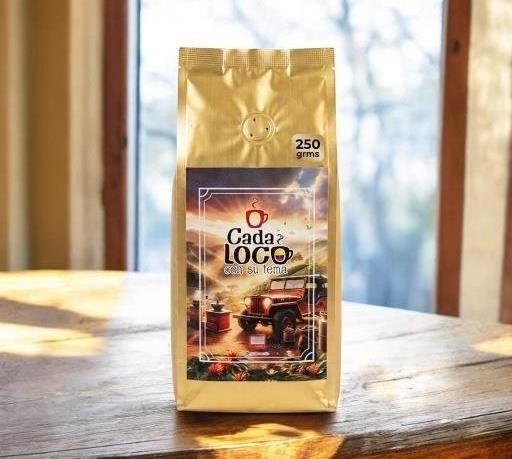

Arte y Bienestar
Habilidad artística, conversación y experiencia sensorial. Giraflor trabaja acuarela, acrílico, cerámica y collage. Silver Flow trabaja raíces, respiración, Gemba y bambú. En versión Vivencia o Inmersión.
Experiencias
Talleres, arte y conversaciones alrededor del café, el bienestar y la creatividad.
Todas las experiencias abren con un ritual de café (Chemex, prensa o dripper) y se adaptan al grupo, el lugar y la fecha.
Habilidad artística, conversación y experiencia sensorial. Giraflor trabaja acuarela, acrílico, cerámica y collage. Silver Flow trabaja raíces, respiración, Gemba y bambú. En versión Vivencia o Inmersión.

Libro, reflexión y experiencia sensorial. El escritor aliado presenta su obra, hay una demostración de barista, y cada asistente se lleva el libro y una bolsa de café.